DartHack is a Flutter/Dart port that lets you play the classic roguelike NetHack 5.0 comfortably on smartphones and tablets, supporting both English (upstream NetHack core) and Japanese (NetHackJP core). This manual walks you through everything from the title screen and starting a character to touch controls, command panels, hardware keyboard shortcuts, tilesets, fonts, UI layouts, sound, challenge modes, and manual defaults.nh configuration—complete with numbered screenshot guides.
Click any screenshot to zoom in
1 Launching the App & Title Screen
When you launch DartHack, you start on the title screen where you can choose the display language, read the guidebook or spoilers, adjust settings, or begin an adventure.
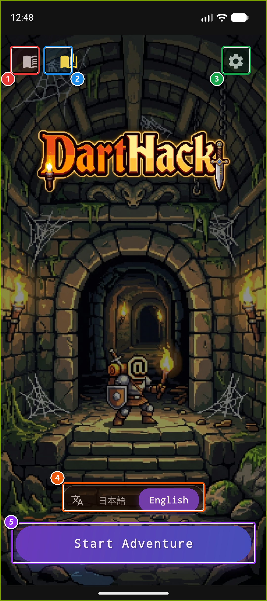
- 1Guidebook / How to Play: Opens the built-in NetHack Guidebook inside the app. Available before starting a run so beginners can check core rules at any time.
- 2Spoilers (Strategy Guide): Opens the built-in NetHack Spoilers collection for reference on mechanics, items, and monsters.
- 3DartHack Manual: Opens this DartHack User Manual offline inside the app.
- 4Game Settings: Opens the detailed settings screen covering tilesets, fonts, layout patterns, sound, and
defaults.nh. - 5Language Switcher (日本語 / English): Toggles between English (upstream NetHack core) and 日本語 (NetHackJP core) for both the Flutter UI and the underlying game engine.
- 6Start Adventure: Opens the character name & saved game selection dialog to begin or resume a game.
English or 日本語) on the title screen before tapping Start Adventure.---
2 Creating a Character & Resuming Saved Games
Tapping Start Adventure opens the "Who are you?" dialog where you enter your hero's name and select the play mode.
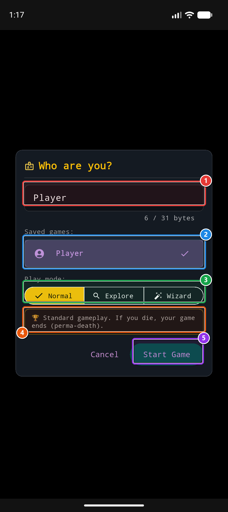
- 1Character Name Input: Enter a name for your adventurer (up to 31 bytes in UTF-8). Entering an existing saved character name resumes that run.
- 2Saved Games List: If you have in-progress saved runs, they appear here. Tap any entry to auto-fill its name and resume from where you left off.
- 3Play Mode Switcher (Normal / Explore / Wizard): Choose between the three game modes.
- 4Play Mode Description: Displays a summary of rules and scoring behavior for the currently selected mode.
- 5Start Game / Cancel: Tap Start Game to launch into the dungeon (for new characters, role/race/tutorial prompts or auto-selection follow depending on options).
Play Mode Comparison
| Mode | Rules & Features | High Score Recording |
|---|---|---|
| Normal | Classic roguelike perma-death. When you die, the run ends and your score is recorded. | Recorded on scoreboard |
| Explore | Practice/discovery mode allowing you to decline death and use exploration assists. | Not recorded as a standard run |
| Wizard | Debug/sandbox mode with special wizard commands (wishing, level teleport, etc.). | Not recorded |
---
3 Main Game Screen Overview
Once in the dungeon, the main play screen displays all game information and controls. In the default Pattern 1 layout, elements are stacked top-to-bottom: Status → Messages → Dungeon Map → D-Pad & Shortcuts → Command Panel.
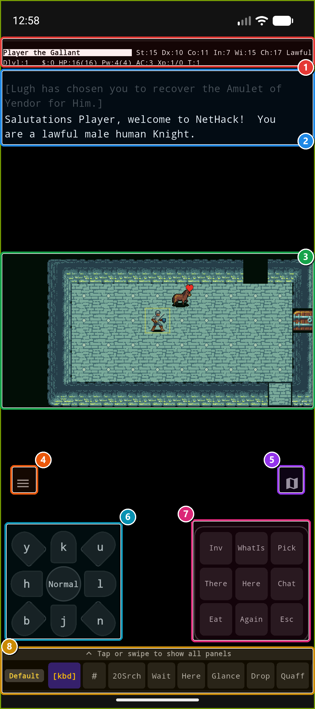
- 1Status Area: Displays your character name & rank, attributes (
St/Dx/Co/In/Wi/Ch), alignment, dungeon level (Dlvl), gold ($), HP, power (Pw), armor class (AC), experience level (Xp), and turn counter (T). Withhitpointbarenabled, an HP gauge renders behind your name/rank. Tap the status area to view detailed character stats (#attributes), and tap weapon/armor fields (or long-press the status area) to open your equipment list (#seeall). - 2Message Area: Shows action results, combat messages, and discoveries. Tap anywhere in this area to open the full Message History sheet.
- 3Dungeon Map Area: Renders the current level. Drag to pan, pinch to zoom in/out, and tap any tile to open a context-aware action menu.
- 4Floating Menu Button (Left): Opens the DartHack Menu drawer (Chapter 8). Its position can be customized in settings.
- 5Full Map Button (Right): Opens the Full level map overview dialog (Chapter 4).
- 68-Way Directional Pad & Mode Button: Eight directional buttons (
y k u / h . l / b j n) move or attack in any direction. Tap the center button (initially Normal) to cycle through enabled movement modes (or send.during direction prompts), and long-press it to open Select Movement Modes to Use (run,g,m,F, etc.). - 73×3 Quick Shortcuts: Nine one-tap shortcut buttons (default:
Inv,WhatIs,Pick,There,Here,Chat,Eat,Again,Esc). Long-press any shortcut button to edit its assigned key/command and display label directly. - 8Command Panel & Expand Handle: A compact one-row strip of categorized action buttons. Tap or swipe upward on the handle to expand all command panels. Long-press any button on the panel to add, delete, or edit its command and label.
- Tap the Status Area: View character attributes & resistances / Tap weapon or armor (or long-press the Status Area): View your equipment list
- Long-press the 8-way D-Pad center button: Open Select Movement Modes to Use (tap to cycle active modes)
- Long-press any 3×3 Quick Shortcut button: Edit its assigned key/command and display label
- Long-press any Command Panel button: Open the button customize menu (change command/label, add, delete, or reset panel)
Expanding All Command Panels
Swipe up or tap the handle (1) above the command strip to view every registered panel simultaneously.
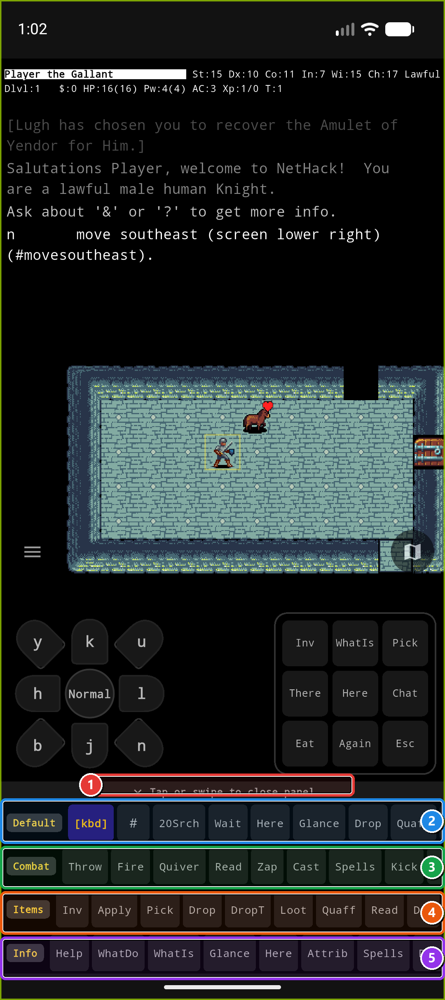
- 1Expand / Collapse Handle: Tap or swipe down to collapse the panels back into a single row.
- 2Default Panel: Starts with
[kbd](switches between the 8-way D-Pad and full soft keyboard) followed by#(extended commands),20Srch,Wait,Here,Glance,Drop,Quaff, and more. - 3Combat Panel: Quick access to combat actions (
Throw,Fire,Quiver,Read,Zap,Cast,Spells,Kick, etc.). - 4Items Panel: Inventory and item actions (
Inv,Apply,Pick,Drop,DropT,Loot,Quaff,Read, etc.). - 5Info Panel: Reference commands (
Help,WhatDo,WhatIs,Glance,Here,Attrib,Spells, etc.).
Default, Combat) to make that panel active when collapsed, and swipe horizontally inside any row to reveal extra buttons. You can long-press any button directly on a panel to add, delete, or customize its key and label, or manage full panel layouts under Game Settings → Edit Command Panel (Chapter 15).Long-Press Customization for Command Panels
Long-press any button on a command panel (such as 20Srch) to open the Edit Button dialog and customize it on the spot without opening Game Settings.
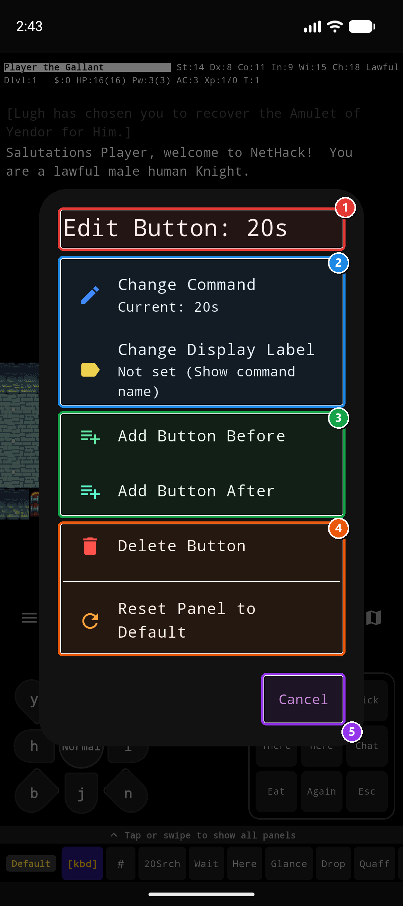
- 1Target Button Header: Shows the current command assigned to the long-pressed button (e.g.,
Edit Button: 20s). - 2Change Command & Display Label: Tap Change Command to assign a new key/command (e.g.,
20s,w,#pray), or Change Display Label to set a custom button label (shows the command name when unset). - 3Insert New Button: Use Add Button Before or Add Button After to insert a new button next to the selected one.
- 4Delete / Reset: Tap Delete Button to remove this button, or Reset Panel to Default to restore the active panel's built-in layout.
- 5Cancel: Closes the dialog without applying changes.
Switching Button Display Mode (Show Commands)
If you set Game Settings → Controller Settings → Button Display Mode (Chapter 14) to Show Commands, buttons display the raw input commands (i, ;, 20s, etc.) instead of descriptive label names (Inv, Glance, 20Srch, etc.).
For players already familiar with classic NetHack keybindings, this setting makes it immediately obvious which key command each button sends.
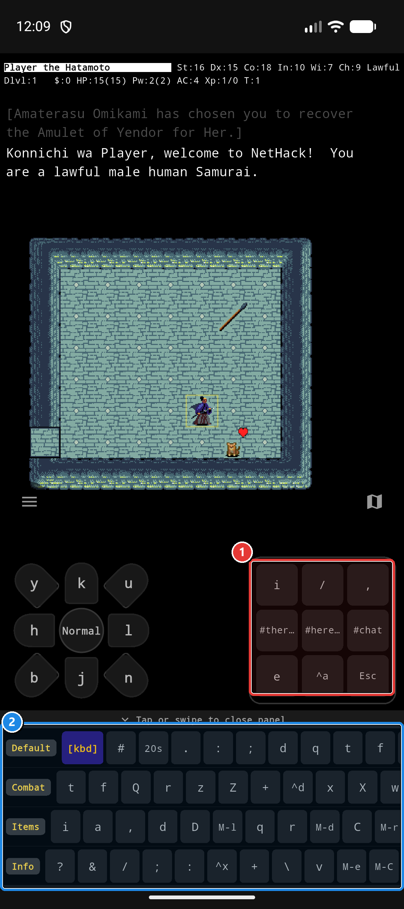
- 13×3 Quick Shortcuts (Command View): Buttons show raw keys and commands (
i,/,,,#ther...,#chat,e,^a, etc.) instead of labels. - 2Command Panels (Command View): Buttons along the bottom command panels likewise switch to raw keybindings such as
20s,.,:,;,d, andq.
---
4 Movement Modes, Map Tapping & Full Level Map
Selecting a Movement Mode
Long-press the center button on the 8-way D-Pad (Normal) to open Select Movement Modes to Use. Here you can pick temporary movement modes or toggle persistent options such as F (tap the center button briefly to cycle through enabled movement modes).
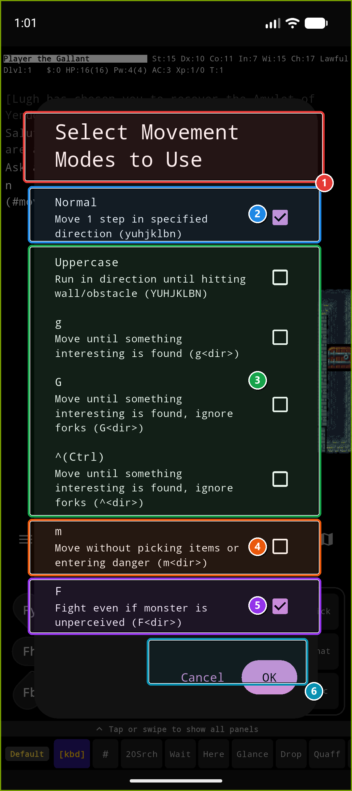
- 1Dialog Header: Title of the movement mode selector.
- 2Normal: Moves 1 step in the chosen direction (
yuhjklbn). - 3Long-Distance Travel (
Uppercase/g/G/^(Ctrl)): Choose Uppercase (YUHJKLBN) to run until hitting a wall/obstacle,g<dir>to travel until something interesting is found (stopping at forks), orG<dir>/^<dir>to ignore forks. - 4
mMode (m<dir>): Moves onto a tile without picking up items and allows stepping onto dangerous terrain. - 5
FMode (F<dir>): Attacks in a direction even when no monster is perceived there (toggleable so it stays active when needed). - 6Cancel / OK: Closes the dialog and applies your selection.
Map Tap Context Menu
Tapping directly on a map tile opens a context-sensitive action menu tailored to where you tapped (your current square, an adjacent square, or a distant tile).
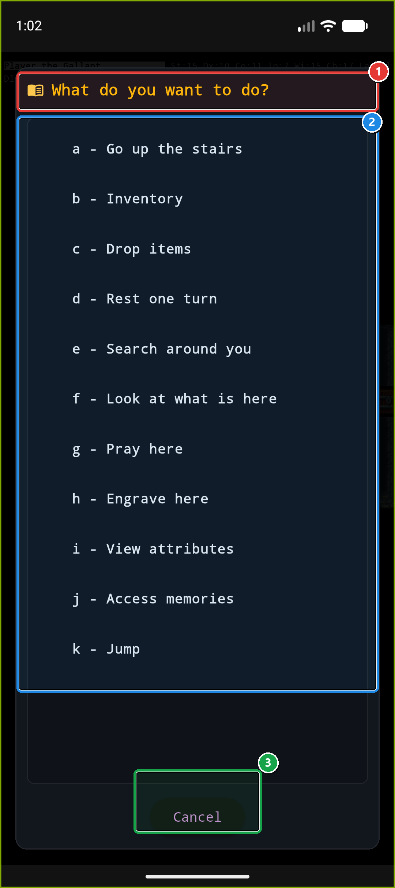
- 1Prompt Header: Displays the prompt (e.g., "What do you want to do?").
- 2Action List: Shows context-appropriate commands—current square actions (Go up the stairs, Inventory, Rest one turn, Search, Pray here, etc.), adjacent square "Move here" / door / combat actions, or distant inspection/travel options.
- 3Cancel Button: Dismisses the menu without taking an action.
Full Level Map
Tap the floating map icon on the right (or press F9 / Alt-z) to view the entire explored dungeon level at once.
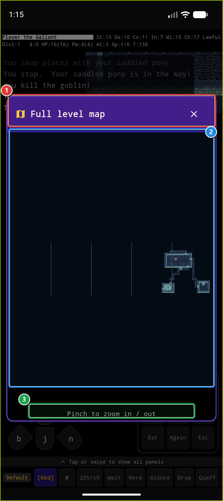
- 1Header & Close (
×): Shows the Full level map title and close button. - 2Level Overview Canvas: Displays all explored rooms, corridors, doors, stairs, and features on the current floor; drag to pan.
- 3Pinch-to-Zoom Hint: Reminds you that pinching adjusts zoom level smoothly inside the overview.
---
5 Soft Keyboard & Extended Commands
Full Soft Keyboard Mode
Tap [kbd] on the command panel to replace the D-Pad and 3×3 shortcuts with a full soft keyboard—ideal for typing classic single-letter commands or modifier combinations (Ctrl, Meta).
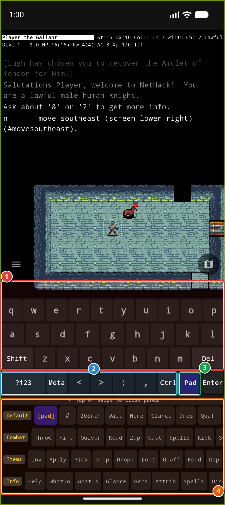
- 1QWERTY Alpha Section: Keys
q–p,a–l,z–m, plusShift(uppercase) andDel. - 2Modifiers & Symbol Bar: Quick access to
?123(numbers/symbols),Meta,</>(stairs up/down),:,,,Ctrl, andEnter. - 3
[Pad]Toggle Button: Returns immediately to the 8-way D-Pad and 3×3 quick shortcuts layout. - 4Command Panels: All four command rows remain accessible below the keyboard for hybrid input.
Extended Commands (#)
Tap # on the command panel (or type #) to browse every extended command with descriptions and live search filtering.
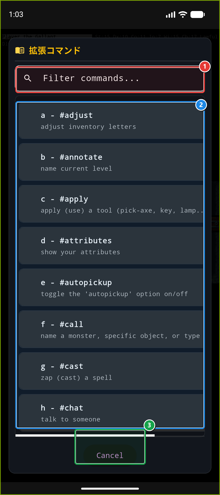
- 1Filter Search Box: Type any part of a command name or description (such as
pray,loot, oradjust) to filter the list instantly. - 2Extended Command Rows: Lists each command's selection letter,
#commandname, and description; tap any row to execute it. - 3Cancel Button: Closes the dialog without running a command.
---
6 Item Menus & Text Input Prompts
Categorized Item Menu
When checking inventory (i), wielding weapons (w), wearing armor (W), quaffing (q), or reading (r), DartHack renders items grouped by category with tileset icons.
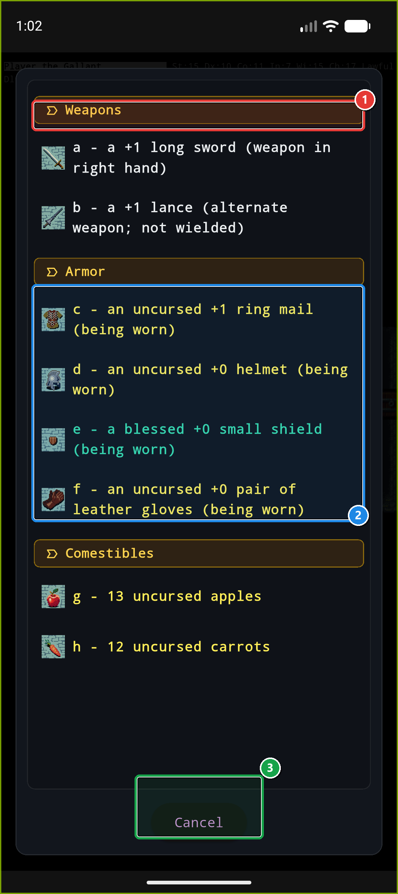
- 1Category Headers: Clearly separates Weapons, Armor, Comestibles, and other item classes.
- 2Item Rows: Each row displays the inventory slot letter (
a,b,c...), the item's tileset sprite, beatitude/status coloring (blessed/uncursed/cursed), count, and equipped state (weapon in right hand,being worn, etc.). - 3Cancel Button: Closes the menu without selecting an item.
Naming & Text Input Prompt
When naming items (C / #name), making wishes, annotating levels, or entering text, a dedicated prompt dialog appears with context and history support.
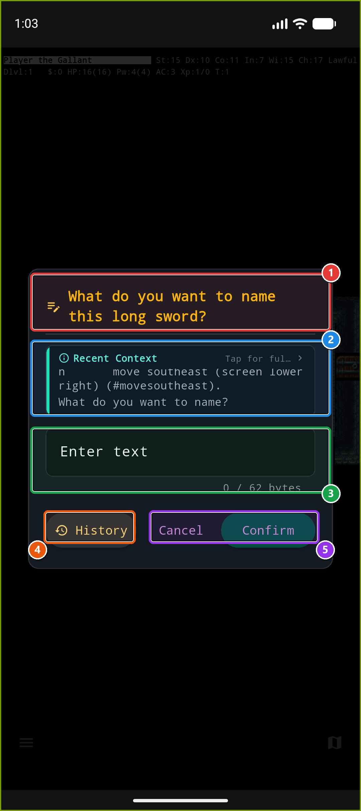
- 1Prompt Question Header: Shows what NetHack is asking for (e.g., "What do you want to name this long sword?").
- 2Recent Context Card: Displays the latest log lines right inside the prompt so you never lose track of which item or monster is referenced. Tap "Tap for full..." to open full history.
- 3Text Input Field & Byte Counter: Supports standard system keyboards/IMEs and tracks the remaining byte budget allowed by the NetHack C core (e.g.,
0 / 62 bytes). - 4History Button: Lets you pick and reuse previously entered text strings.
- 5Cancel / Confirm: Sends your input to the game engine or cancels the prompt.
---
7 Message History & Spoilers Viewer
Message History Sheet
Tap the message area at the top of the play screen to slide up the Message History sheet.
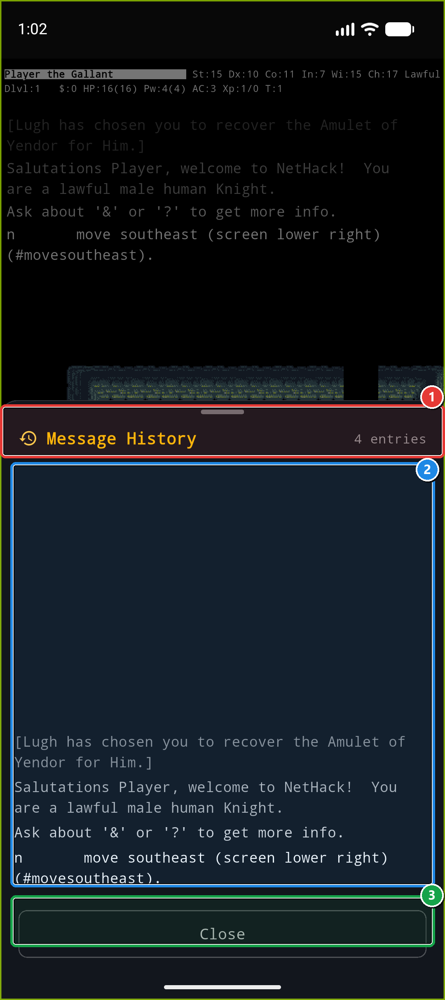
- 1Sheet Header & Close Hint: Displays the title and gesture hint (Tap or swipe down to close).
- 2Color-Coded Log List: Shows recent and older messages in chronological order with highlighted warnings.
- 3Close Button: Dismisses the sheet (or swipe down anywhere on the header).
Spoilers & Guidebook Viewer
Accessible from the title screen book icons or DartHack Menu → Read Spoilers / Read Guidebook.
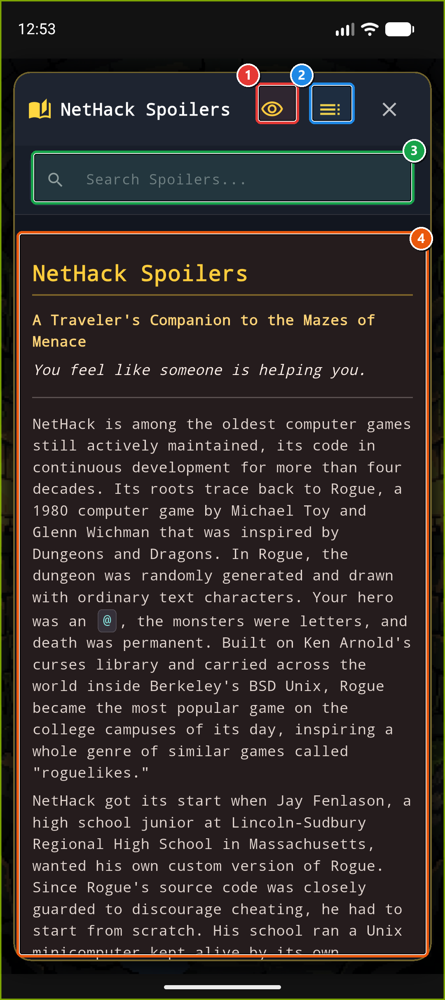
- 1Peek at Game Screen (Eye Icon): Tap to hold or long-press to peek through the viewer and inspect the dungeon screen underneath without losing your place.
- 2Open Table of Contents (TOC Icon): Jumps directly to any spoiler chapter.
- 3Search Bar: Filters and finds matching terms across the spoiler document.
- 4Formatted Spoiler Content: Renders sections, quotes, and inline symbols cleanly for mobile reading.
---
8 DartHack Menu (Drawer)
Tap the floating left menu button (or swipe from the left edge, or press Ctrl+M / F10) to open the DartHack Menu drawer.
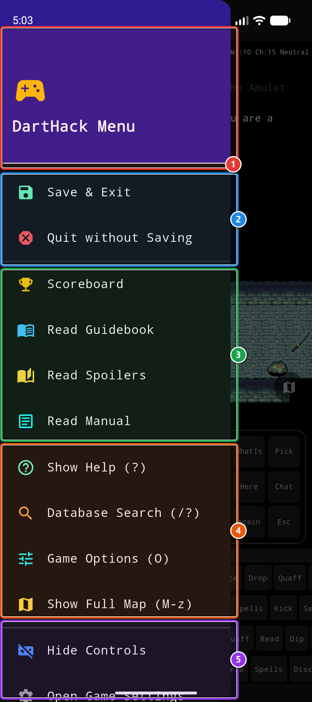
- 1Menu Header: Displays the DartHack Menu banner.
- 2Save & Exit Controls: Provides Save & Exit (saves your current run cleanly) and Quit without Saving (abandons the current run with confirmation).
- 3Records & Documentation: Quick access to Scoreboard (Chapter 9), Read Guidebook, Read Spoilers, and Read Manual (offline user manual).
- 4Game Commands & Overlays: Directly opens Show Help (
?), Database Search (/?), Game Options (O), and Show Full Map (M-z). - 5UI & App Settings: Toggle Hide Controls to temporarily maximize map visibility, or tap Open Game Settings for Flutter app preferences (Chapters 10–16).
---
9 Scoreboard, Run Statistics & Tombstone
Scoreboard
When a run ends or when opened from the DartHack Menu, the Scoreboard presents recorded entries as clean cards.
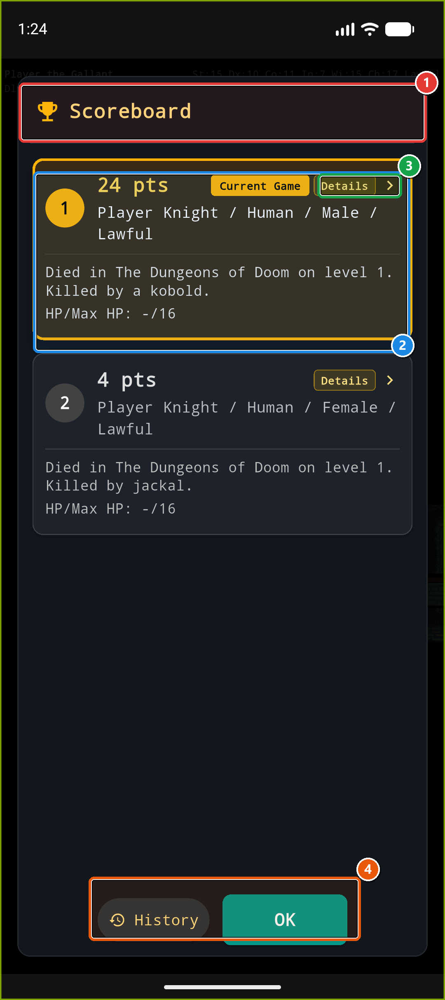
- 1Scoreboard Header: Title banner of the rankings screen.
- 2Entry Cards: Shows rank badge, points, character profile (Name / Role / Race / Gender / Alignment), fate, dungeon level, and HP/Max HP. The active/just-ended game is highlighted with a gold border and a Current Game badge.
- 3Details Button: Tap
Details >on any entry to inspect detailed play statistics for that run. - 4History & OK: Review the final message log via History, or tap OK to dismiss.
Detailed Run Statistics (xlogfile)
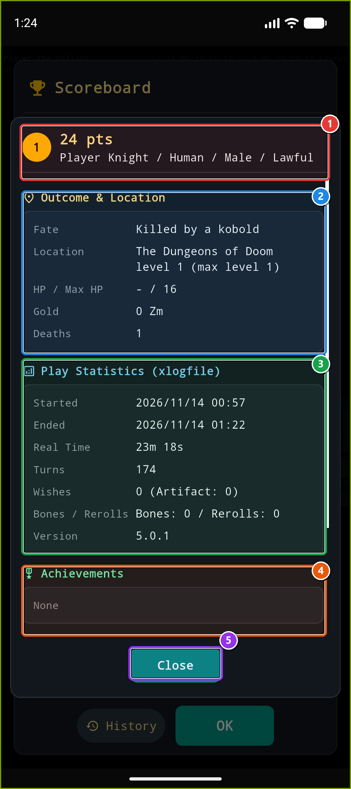
- 1Selected Entry Header: Displays the rank, score, and full character summary.
- 2Outcome & Location: Shows final fate, dungeon branch, depth (and max depth reached), HP / Max HP, gold (
Zm), and death count. - 3Play Statistics (
xlogfile): Tracks start/end timestamps, real elapsed play time, turn count, wishes (and artifact wishes), bones/reroll counts, and NetHack version. - 4Achievements: Lists conducts and special accomplishments earned during the run.
- 5Close Button: Returns to the Scoreboard list.
Death Tombstone
When your character dies, a pixel-art tombstone screen commemorates the end of the run before advancing to the scoreboard.
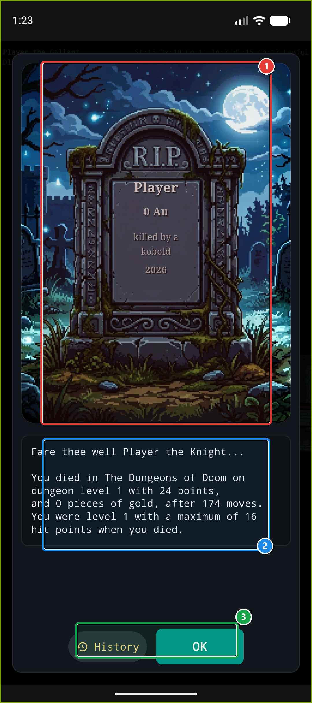
- 1R.I.P. Tombstone Art: Renders the pixel-art tombstone engraved with character name, cause of death, and year.
- 2Farewell Summary: Summarizes your character's final belongings and fate.
- 3History & OK: Check your final turns with History or continue with OK.
---
10 Selecting & Importing Tilesets
Access Game Settings from the title screen gear icon or DartHack Menu → Open Game Settings. Open Tileset & Symbol Settings at the top to toggle graphical tiles on/off or switch tilesets via Select Tileset.
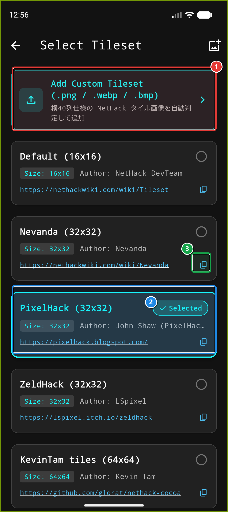
- 1Add Custom Tileset (
.png/.webp/.bmp): Import any standard 40-column NetHack tilesheet (width ÷ 40columns). Non-square tiles (such as15x25) are automatically detected and rendered with accurate aspect ratios. - 2Tileset Cards: Displays all bundled and custom tilesets with pixel dimensions and author attribution; the active set displays a Selected badge (default: PixelHack (32x32)).
- 3Copy Source URL: Tap the copy icon beside a tileset's URL to copy its homepage link to your clipboard.
Bundled Tilesets
| Tileset | Resolution | Notes |
|---|---|---|
| Default | 16x16 |
Classic standard NetHack 16×16 tiles |
| Nevanda | 32x32 |
Clean, popular 32×32 pixel tileset |
| PixelHack | 32x32 |
Default high-contrast 32×32 tileset |
| ZeldHack | 32x32 |
Colorful Famicom/NES-style 32×32 tileset |
| KevinTam tiles | 64x64 |
High-resolution transparent tiles with two-layer background terrain rendering |
---
11 Font, Display, Status & Message Area Settings
Font Settings
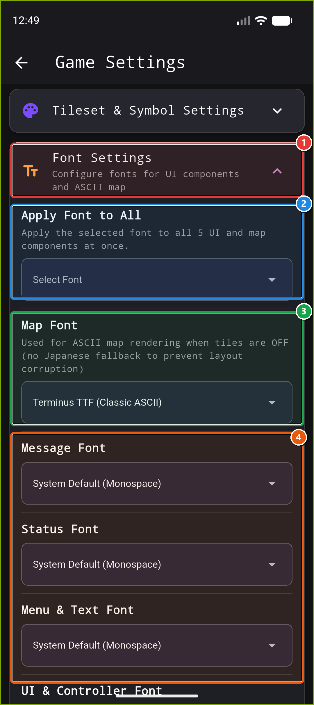
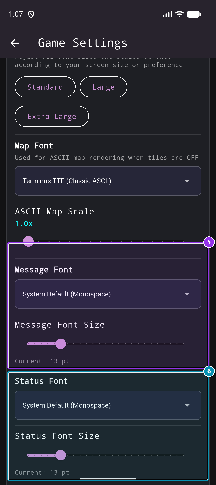
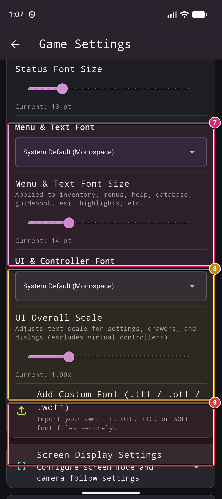
- 1Font Settings Header: Expands unified typography and text-size controls.
- 2Apply Font to All: Applies a single chosen font across all 5 UI and map categories at once.
- 3Size Preset (All): One-tap Standard, Large, and Extra Large presets to adjust all font sizes and scales together.
- 4Map Font & ASCII Map Scale: Chooses the monospace font for ASCII map rendering when tiles are OFF (default: Terminus TTF (Classic ASCII)) and scales the ASCII map (
1.0x, etc.). - 5Message Font & Message Font Size: Sets the font and size (
pt) for the game message area. - 6Status Font & Status Font Size: Sets the font and size (
pt) for the status bar. - 7Menu & Text Font & Font Size: Sets the font and size (
pt) used across inventory, menus, help, database, guidebook, and exit highlights. - 8UI & Controller Font & UI Overall Scale: Adjusts the font and overall scale for settings, drawers, and dialogs (excluding virtual controllers).
- 9Add / Manage Custom Fonts: Import
.ttf,.otf,.ttc, or.wofffiles from device storage as custom fonts.
Screen Display Settings
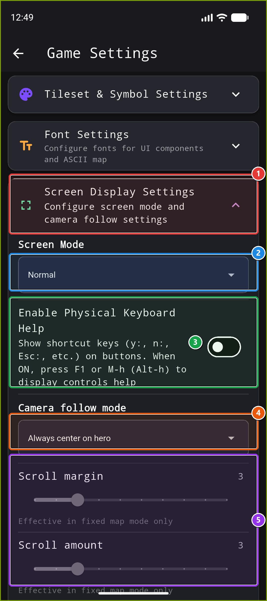
- 1Screen Display Settings Header: Expands screen and camera behavior options.
- 2Screen Mode: Chooses screen presentation mode (e.g., Normal).
- 3Enable Physical Keyboard Help: Displays key hint labels (
y:,n:,Esc:, etc.) on UI buttons and enablesF1/M-h (Alt-h)help popup. - 4Camera follow mode: Switch between Always center on hero (re-centers the hero every move) and Fixed map mode (desktop-style static viewport that scrolls only near edges).
- 5Scroll margin & Scroll amount: Active in Fixed map mode to control how many tiles from the edge scrolling triggers and how many tiles it shifts.
Status Area Settings
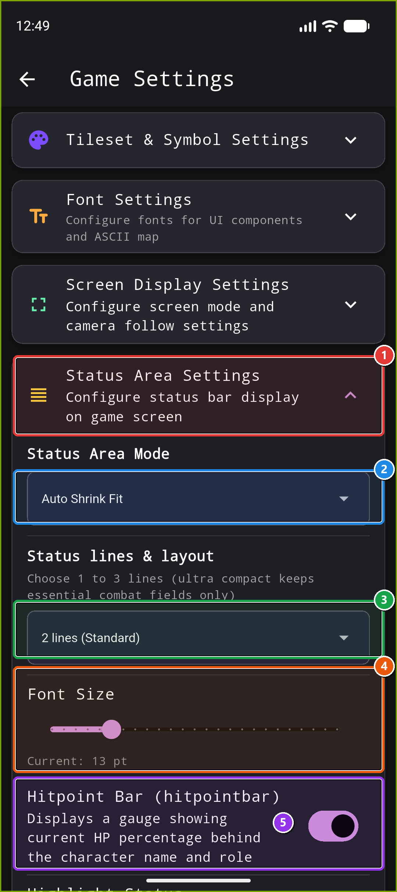
- 1Status Area Settings Header: Tap to expand or collapse status options.
- 2Status Area Mode: Controls how text fits horizontally (e.g., Auto Shrink Fit).
- 3Status lines & layout: Switches between 1-line, 2-line (Standard), 3-line, or ultra-compact combat layouts.
- 4Hitpoint Bar (
hitpointbar): Draws a color-coded HP percentage gauge behind your character name and role. - 5Highlight Status, Turns & Exp: Toggle Highlight Status (
hilite_status), Show Elapsed Turns (time), Show Exp Points (showexp), and equipped weapon/armor summaries (font size controls have moved to Font Settings).
Message Area Settings
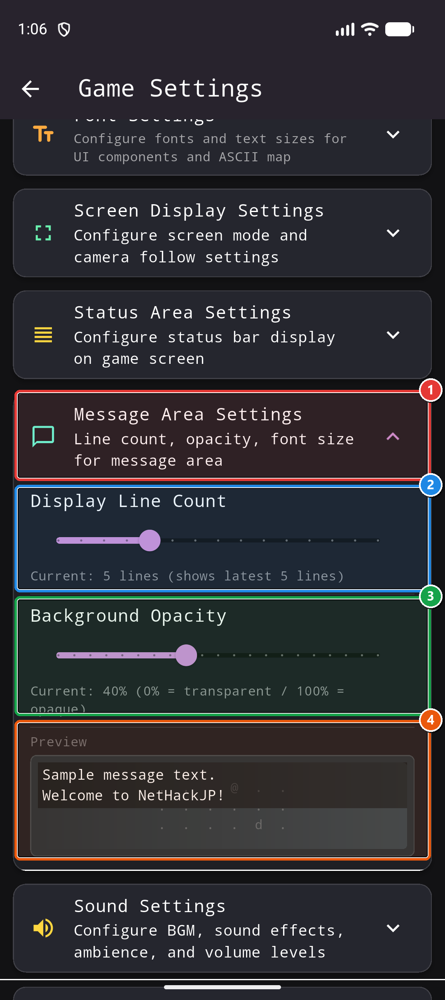
- 1Message Area Settings Header: Tap to expand or collapse message window options.
- 2Display Line Count: Adjusts how many recent message lines (
1–15) appear at the top of the screen. - 3Background Opacity: Controls the message box backdrop opacity (
0%transparent to100%opaque) for balancing map visibility and text readability. - 4Live Preview: Previews the configured line count, opacity, and the font/size chosen in Font Settings.
---
12 Sound Settings
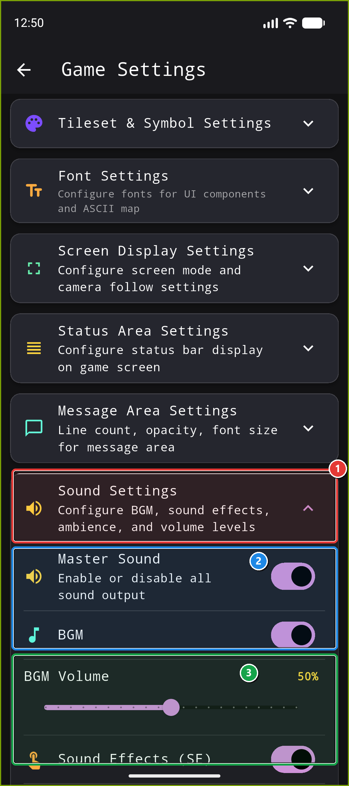
- 1Sound Settings Header: Expands audio options.
- 2Master Sound & BGM Toggles: Use Master Sound to mute/unmute all audio, or toggle BGM independently.
- 3BGM Volume, Sound Effects (SE) & Ambience: Adjust BGM volume with the slider (
0%–100%) and toggle dungeon/combat SE and room/branch ambience.
---
13 UI Layout Customization & Tablet Mode
Layout Patterns & Side Swapping
Customize where the status bar, messages, D-Pad, and shortcuts appear to match your hand size and preferred grip.
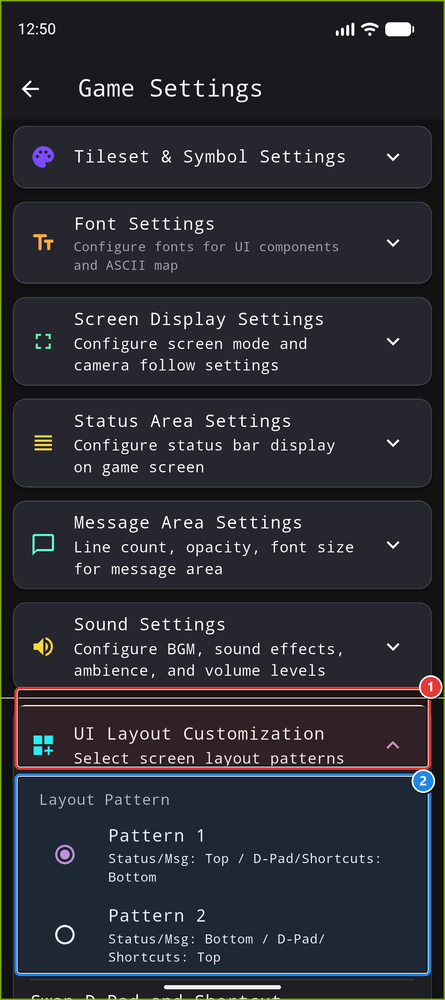
- 1UI Layout Customization Header: Expands layout options.
- 2Layout Pattern: Switch between Pattern 1 (Status/Msg top, D-Pad/Shortcuts bottom) and Pattern 2 (D-Pad/Shortcuts top, Status/Msg bottom); toggles below let you Swap D-Pad and Shortcut Positions left/right and reposition the floating menu button.
Landscape & Tablet Layout
On wide landscape screens and tablets (such as 1920×1200), DartHack adapts automatically to maximize dungeon visibility and place wide command panels along the bottom edge.
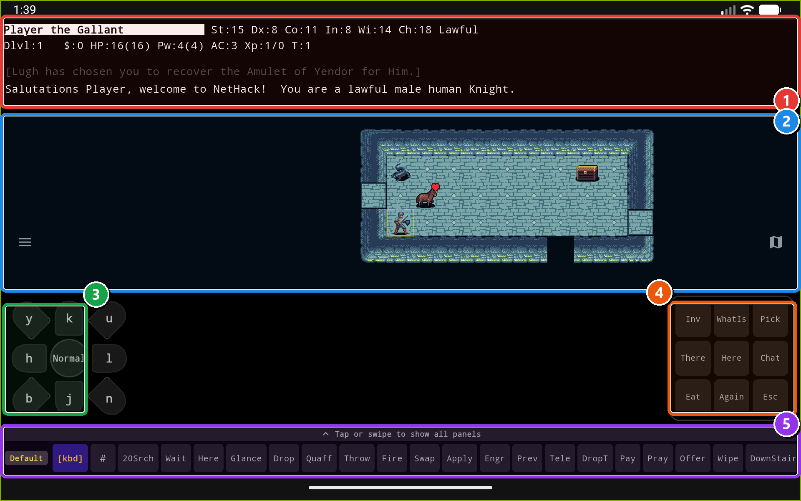
- 1Top Status & Message Area: Full-width header fits status lines cleanly with generous message room.
- 2Expansive Dungeon Map & Side Floating Buttons: Wide map viewport with unobtrusive floating Menu and Full Map buttons at left and right.
- 3Bottom-Left 8-Way D-Pad: Positioned comfortably within left-thumb reach.
- 4Bottom-Right 3×3 Shortcuts: Positioned within right-thumb reach.
- 5Wide Command Panel: Displays nearly the entire active command strip side-by-side without scrolling.
---
14 Controller Settings
Under Game Settings → Controller Settings, you can configure button display mode, pad opacity, scale multipliers, long-press / far-tap travel behavior, PC/external mouse bindings, and the drawer menu swipe edge.
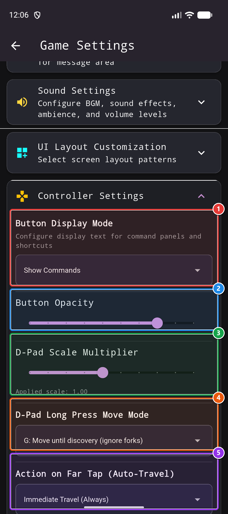
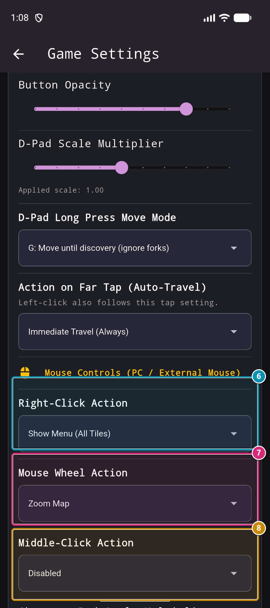
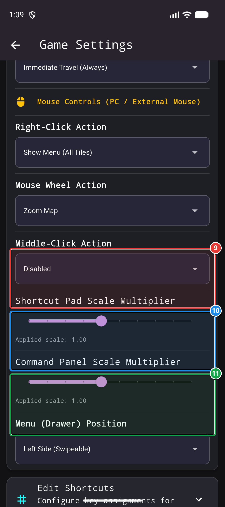
- 1Button Display Mode: Choose Show Labels (default) or Show Commands (displays raw keys such as
i,;,20son command panels and 3×3 shortcuts—recommended for experienced NetHack players). - 2Button Opacity: Adjusts transparency (
0.1–1.0) for the 8-way D-Pad, 3×3 shortcuts, and floating controls. - 3D-Pad Scale Multiplier: Scales the 8-way D-Pad between
0.6×and1.5×(shows the clamped effective scale for your screen width below the slider). - 4D-Pad Long Press Move Mode: Chooses the directional travel mode triggered when long-pressing a D-Pad direction (Normal, Uppercase,
g,G,^,m, orF). - 5Action on Far Tap (Auto-Travel): Configures what happens when tapping a distant map tile (
Show Menu,Immediate Travel (Always),After Scroll Only, orDisabled). Left-click also follows this tap setting. - 6Right-Click Action: Sets what happens when right-clicking with a mouse (Show Menu (All Tiles), Smart Move, Direct Action, or Disabled).
- 7Mouse Wheel Action: Configures mouse wheel scrolling to Zoom Map, Scroll Map, or Disabled.
- 8Middle-Click Action: Assigns middle-button (wheel click) to Disabled, Show Menu (All Tiles), Smart Move, or Direct Action.
- 9Shortcut Pad Scale Multiplier: Scales the 3×3 Quick Shortcut grid (
0.6×–1.5×). - 10Command Panel Scale Multiplier: Scales the bottom Command Panel buttons (
0.6×–1.5×). - 11Menu (Drawer) Position: Selects which screen edge opens the DartHack Menu (Left Side (Swipeable), Right Side, Top, or Bottom).
---
15 Customizing Command Panels & Quick Shortcuts
Tailor the bottom command panels to match your favorite roles and playstyles.
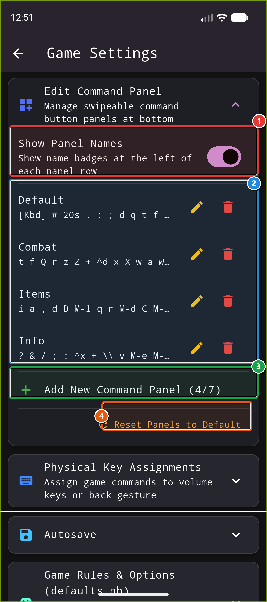
- 1Show Panel Names: Toggles the left-hand name badges (
Default,Combat,Items,Info) on each panel row; turning them off frees horizontal width for extra buttons. - 2Panel List (Edit / Delete): Shows each configured panel and its starting keys. Tap the pencil icon to edit button labels, commands, and ordering, or the trash icon to remove a custom panel.
- 3Add New Command Panel: Create up to 7 custom panels (e.g., dedicated spellcasting or extended-command strips).
- 4Reset Panels to Default: Restores the built-in 4-panel configuration (
Default,Combat,Items,Info).
---
16 Physical Keyboard Guide & Hardware Key Mapping
Physical Keyboard Shortcuts
When using a physical keyboard (USB, Bluetooth, or Chromebook), enable Game Settings → Screen Display Settings → Enable Physical Keyboard Help to bring up the DartHack shortcut reference at any time by pressing F1 or Alt-h (M-h).
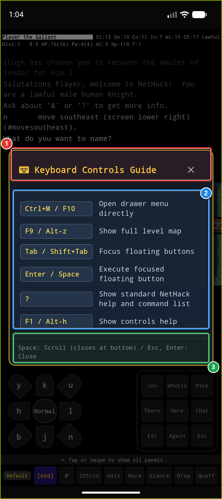
- 1Guide Header & Close (
×): Title bar for the controls guide. - 2Shortcut List: Quick reference for
Ctrl+M/F10(open drawer menu),F9/Alt-z(full level map),Tab/Shift+Tab(focus floating buttons),Enter/Space(execute focused button),?(standard NetHack help), andF1/Alt-h(this guide). - 3Navigation Footer: Press
Spaceto scroll (closes automatically at the bottom), orEsc/Enterto close immediately.
Physical Key Assignments (Volume & Back Keys)
Even without a keyboard, you can bind hardware Volume Up, Volume Down, and the Android Back button to frequent NetHack commands.
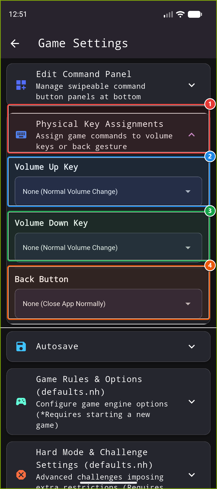
- 1Physical Key Assignments Header: Expands hardware button bindings.
- 2Volume Up Key: Assign a game command (default:
None (Normal Volume Change)). - 3Volume Down Key: Assign a game command (default:
None (Normal Volume Change)). - 4Back Button: Customize back gesture/button behavior (default:
None (Close App Normally)).
---
17 Game Rules & Challenge / Hard Modes
DartHack exposes key defaults.nh rules and built-in challenge conducts directly in Game Settings.
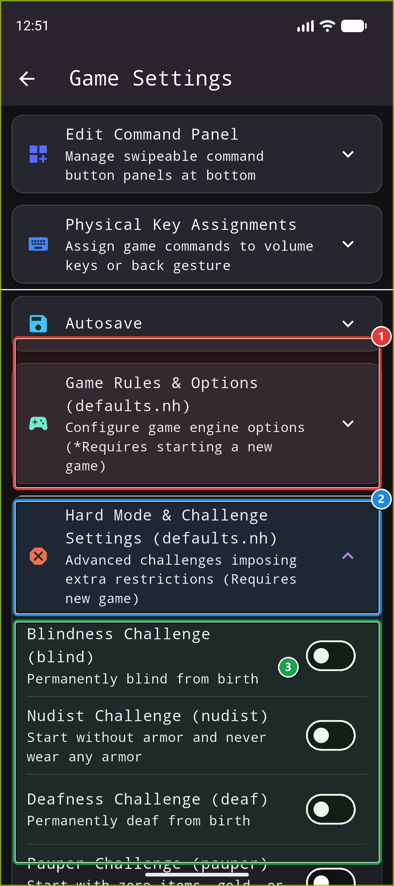
- 1Game Rules & Options (
defaults.nh): Configure core engine behaviors such as autopickup and prompts (Requires starting a new game). - 2Hard Mode & Challenge Settings (
defaults.nh) Header: Expands advanced challenge toggles (Requires starting a new game). - 3Challenge Toggles: Toggle restrictions such as Blindness Challenge (
blind), Nudist Challenge (nudist), Deafness Challenge (deaf), and Pauper Challenge (pauper) (scroll down for more challenges).
---
18 Advanced Settings (Editing `defaults.nh` & Backup)
At the bottom of Game Settings, advanced users can edit the raw NetHack configuration file or back up/transfer their Flutter UI setup.
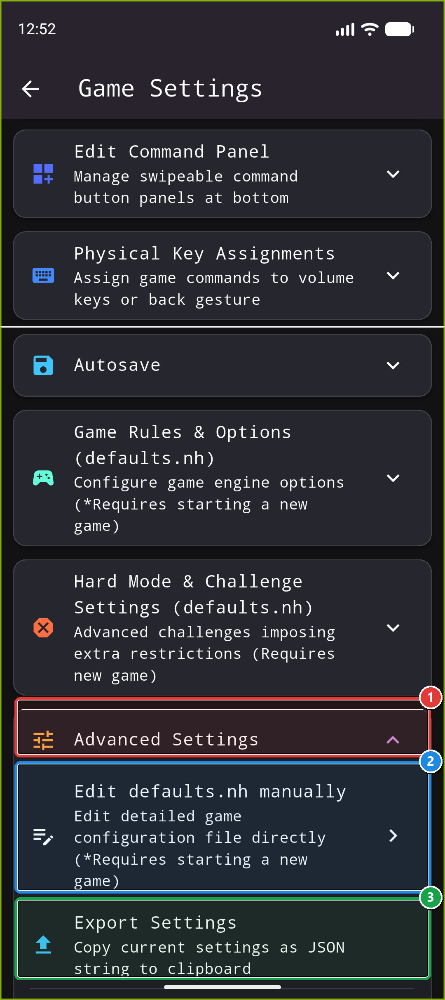
- 1Advanced Settings Header: Expands power-user tools.
- 2Edit
defaults.nhmanually: Opens a direct text editor fordefaults.nh, letting you write any classic NetHack options (OPTIONS=...,MENUCOLOR=..., custom status highlights, etc.). Requires starting a new game for changes to take effect. - 3Export Settings / Import Settings: Tap Export Settings to copy all UI, font, layout, command panel, and shortcut preferences as a JSON string to your clipboard, or use Import Settings below to restore them on another device.
---
Happy dungeoneering — may the RNG smile upon you!